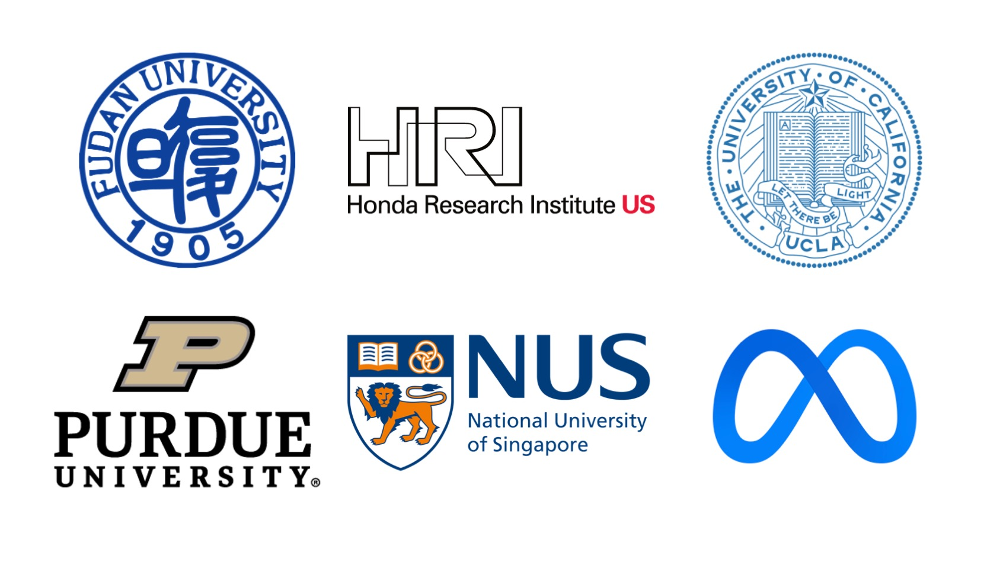

Chengxi Li (李成蹊)
I just passed my Ph.D. defense in September, 2021 and I am going to join Facebook, Inc. as a research scientist after graduation. I spent 5 years doing my Ph.D. in Electrical and Computer Engineering at Purdue University , advised by Prof. Stanley H. Chan. My research interests include computer vision, image processing and machine learning.
Before coming to the U.S., I obtained my B.S. degree from Electrial and Electronics Department at Fudan University in June 2016. In 2015, I was selected as Cross-disciplinary Scholar in Science and Technology at University of California, Los Angeles, where I conducted research in object detection in computer vision under the guidance of Prof. Vwani Roychowdhury.
|  |
About Me
预计阅读时间：5min💡为什么要写这篇自我介绍？
我经常为这一件事感到苦恼：几千人的微信好友列表里，总有许多陌生的名字，和他们对话可以追溯到刚加好友的那天，后来就再也没聊过。可将其删除，又担心日后若有需要，则失去了联系方式。
反思了其中的根源之一，也许是因为我们还未曾察觉到和对方有怎样紧密的联系之前，就主动或被动地切断了彼此继续深入了解的通道。
举个例子🌰，因某个聚会认识的微信好友，只会在好友请求通过以后，互相自报家门地说一句“我叫xxx，很高兴认识你。”就再无沟通了。有时候我会主动询问一些基本信息—“你在什么地方工作呀？是哪里人呀？” 试图去拉进彼此的距离。可如果再追问，恐怕就要被人当作查户口了，也会引起他人的一些不适。
可在这些没有被捅破的信息里，也许隐藏着许多有趣的共通之处：我们是老乡、校友、同事（有很多共同好友）；在相关联行业创业（有很多资源和信息可以共享）；类似的兴趣爱好和许多一拍即合的想法……如果知道了这些，也许我们的联系就不会止步于朋友圈的“点赞之交”，而会有更多交集，甚至成为一辈子的朋友。
ENFJ性格的我，喜欢与人打交道，也喜欢互相串联朋友认识。也是这个原因，让我萌发了写一篇“自我介绍”的想法。希望通过这种主动提供信息的方式，建立彼此了解和沟通的桥梁。
👩🏻🎓21年求学生涯
我于2012年高考考入复旦大学电子工程系，大三赴新加坡国立大学交换，2015年参加UCLA和中国10所高校合办的CSST暑期科研项目。2016年本科毕业后，直博美国普渡大学，攻读计算机视觉方向的博士学位。读博的过程也可谓一波三折，在前导师组里研究了两年半后，主要考虑在当时那样的环境中自己的学术成长速度缓慢以及成果有限，万分纠结之下选择了换组。因此如果你也正处在读博迷茫焦虑🤯的阶段，欢迎与我交流（LinkedIn 📮）。
我也有着特别的读博经历—5年的博士生涯中，在普渡生活了3年，因实习和疫情原因在加州湾区生活了2年。因此我的主要研究方向与我的导师Prof. Stanley Chan也有所不同。博士论文课题为“Exploring Situation Awareness for Advanced Drivers-Assistance Systems” ，研究自动驾驶环境中的视频分析、场景理解的感知问题。
👩🏻💻51% 科技公司Research Scientist
我即将加入Facebook（Menlo Park Office）担任Research Scientist。目前还没有选组，需要参加Bootcamp，但我倾向于结合机器学习与计算机视觉应用的Engineering Team。如果尘埃落定，我会前来更新。也欢迎和感谢在职前辈们多多给我提供信息（LinkedIn 📮）。尽管还未正式成为一个“大厂打工人”，我已有两年的工业实习和多次与公司合作的经验—
1️⃣ 2018年，在Siemens公司的科研资金赞助下，与其New Jersey的科研团队合作完成“基于对话的视频检索”项目。
2️⃣ 2019-2020年，作为Research Intern加入Honda Research Institute的San Jose Office,参与了4项有关自动驾驶感知的研究课题，完成3篇论文，4项专利还在申请中。
3️⃣ 2020年底，在Facebook MPK的Buisiness Integrity Core ML组作为Machine Learning Engineer Intern实习。
4️⃣ 2021年，与位于Pasadena的新型相机研发公司Gigajot Technology合作完成“低光照条件下的目标检测”项目研究，并发表论文1篇，1项专利正在申请。
未来的几年里我希望能在Facebook专注提升自己✔️专业技术、✔️团队管理，以及✔️科技行业的见解。与此同时，我仍然对🚗自动驾驶🚗行业有非常浓厚的兴趣，包括技术应用与商业前景。我希望有朝一日这两条路能够交汇。
👩🏻💼49% 教育+媒体公司创始人
主业工作之余，我也是国内两家公司的创始人。教育公司 — 海研知士
2018年，在我博士三年级，我遭遇了读博最艰难的那段时光。长时间的没有任何学术成果，让我对自己产生了严重的自我怀疑，也一度认为自己是个loser。为了重新建立对自己的信心，我决定做一些自己擅长的事来获得成就感，于是我成立了自己的教育公司。契机来自于那年夏天回国休假，我机缘巧合地接触到了两名对人工智能感兴趣的高中生，并且在线上给他们教授人工智能的基础课程。短短的一个月，我的专业知识和教学能力得到了极大的认可，学长家长甚至评价我“比之前授课的斯坦福博士还厉害”。
深受鼓舞的同时，我产生了一些思考：一方面惊讶于现在的高中生对高精技术知识的好奇心和渴求，另一方面我也体会到这种教育资源的稀缺性和局限性。学生和家长苦于在鱼龙混杂的市场上，寻找到真正懂这些技术的，并且教学能力过关的老师。而作为在大学里有助教经验的理工科博士生，我也非常希望能够把这些知识传播给更年轻的学生，激发他们的兴趣，将他们引进门。恰好爱交朋友的我，身边有一群和我类似，对教学有热情的优秀博士生，我想成为这其中的一个桥梁，让看起来“高深莫测”的高科技知识“破圈”，传播出去。2020年底，我还与我的博士导师合作设计课程，在3所香港高中试点，教授线上“机器学习”课程。
目前我们公司已经与国内15家知名教育公司达成合作，主要业务集中在针对高中生和本科生的“科研背景提升”，以及配合相应的“留学申请”业务。如果有对我的公司感兴趣的伙伴，也欢迎与我有进一步沟通（📮: offerlab.us@gmail.com）。
新媒体 - “海盐波波子”
2021年初，我与另两位在读女博士一起创立“海盐波波子”媒体账号。我们以视频形式，采访毕业于海外名校的优秀青年。他们在我们的平台上畅谈自己在海外求学、工作、生活过程中遇到的有趣故事和经验。旨在为计划出国，或已经在海外求学的学子们，树立榜样作用，提供有价值的信息和帮助。经过5个月的运营和测试，在小红书📕上已突破万粉，精准定位到18-28岁的年轻粉丝人群。也打造了数个爆款视频，其中一篇“放弃百万年薪，牛津攻读数学博士”的视频，成为小红书社区知识类内容榜Top10。
我们将拓展我们的媒体号到b站、youtube等其他平台。与此同时，我们已开始帮助在某一领域有专业简介、有表达欲的伙伴，建立个人IP，将其孵化成为知识类KOL。我们的团队也招贤纳士，如果你符合以下任何一项：
🤍【采访】：在海外求学/工作/创业/生活经历，身上发生过有趣的故事，想要与更多人分享；
🤍【博主】：有表达欲，对某一领域有自己的独到见解，有兴趣成为一名KOL；
🤍【加入】：对新媒体内容策划和运营感兴趣，有志于在新媒体领域深耕，想要加入我们核心团队。
都欢迎联系我们邮箱 📮: haiyanbobozi@gmail.com
🎯我的目标
“你的人生目标是什么？” 每当新认识一个特别聊得来的朋友，我都会抛出这个听起来有点宏大的问题。有时不免会给对方造成一种，“被易立竞采访的压迫感”。之所以好奇，是因为这是我一直在探求答案的一件事。25岁之前，我一直以为我的最大的遗憾，是没有从小培养自己在某一方面的兴趣爱好。后来我才渐渐意识到，我不并不是没有兴趣爱好，而是我热爱的事很难具象成“读书”，“绘画”，“户外”这种具体形式。
所幸，在不断摸索中，我慢慢找到了感兴趣、有热忱、想要为之奋斗的方向。我相信“这个世界不变的就是变化”，我目前的思考也一定会在未来的日子里有所调整和改进，但目前而言我渴望：
💫了解这个世界和社会运行背后的原理；
💫引导自己和他人发掘自身价值，给予帮助，将这样的价值传播出去，从而回馈于社会。
谢谢你的阅读。
Contact
Email: chengxi.li.purdue@gmail.com